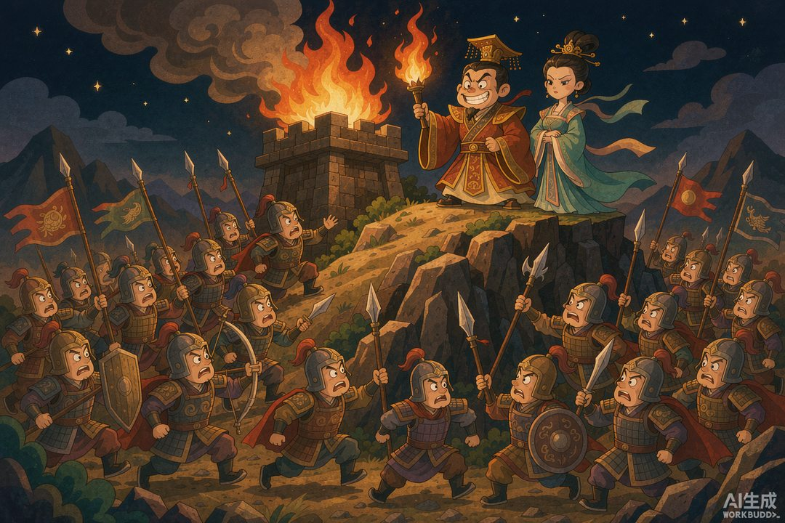
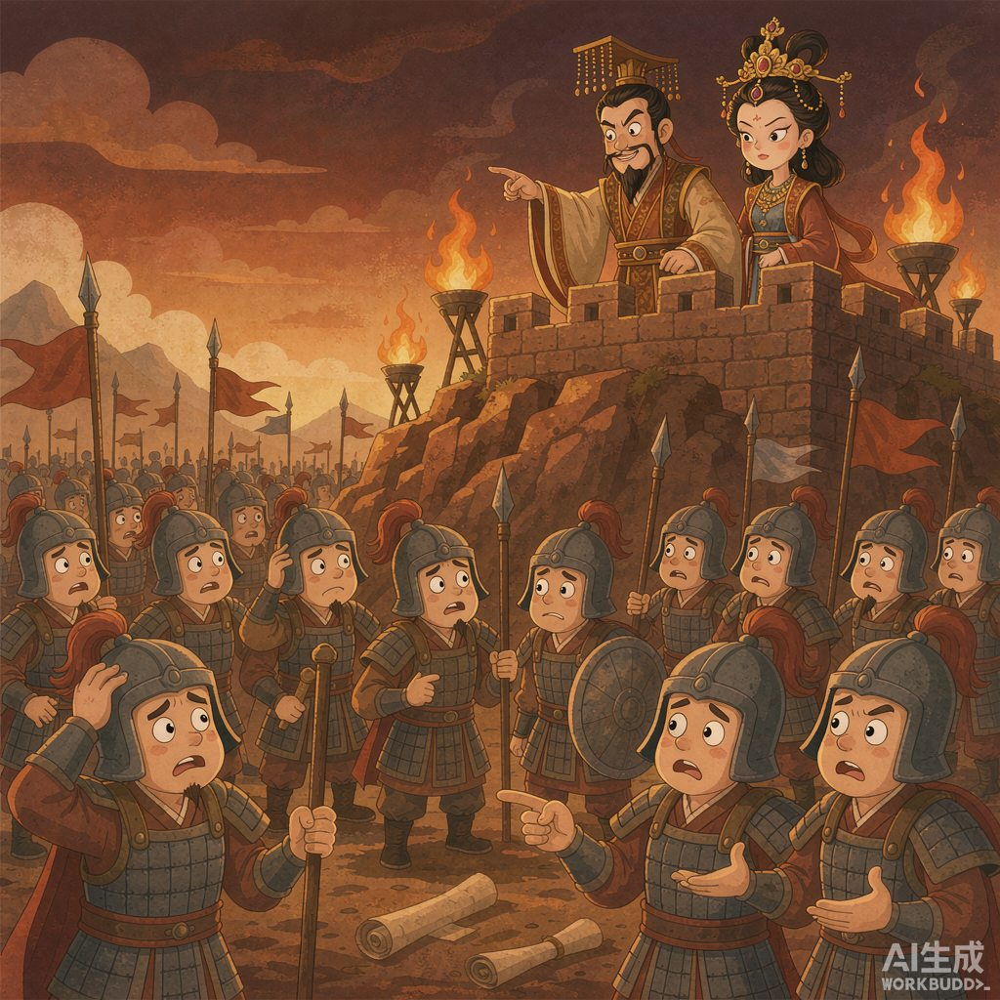

|
《信息传播那些事儿》· 卷一 · 04 |
|
烽火戏诸侯：世界上第一份"假新闻" —— 一个国王用一场"狼来了"，把自己的命和国家一起搭了进去 |

▲ 骊山之上，烽火骤起（AI 生成示意图）
|
公元前 771 年，一个王朝的倒闭清算报告里，死因一栏写着：信用破产。 |
上一篇我们说到，结绳记事解决了信息的"存"，但存进去的东西是真是假，绳子管不了。从这一篇开始，人类要面对一个更凶险的问题：发出去的信息，可以造假。
而史上第一次因为"假信息"亡国的案例，主角是个国王，道具是一堆柴火。
一 | 西周的"国家级警报系统" |
先说清楚烽火台是什么。这不是几堆随意的篝火，而是一套设计相当精巧的军事信息网络。
在西周的都城镐京（今西安附近）周边，尤其是西边防御犬戎的方向，沿着山脊修建了一长串烽火台，光骊山一带就有二十多座，每隔几里一座。白天烧狼粪起烟，晚上点火发光，一台点火，邻台看见立刻跟着点，一路接力传向内地。
诸侯们约定：看到烽火，不用请示、不用核实，立刻带兵勤王。这是那个时代传播速度最快、优先级最高的一条信息通道——相当于把"敌袭"这条消息，压缩成了一柱烟，用光速跑完了整个国家。
用今天的话说：这是一套国家主干的紧急广播系统，全网置顶，不可撤回。
但整套系统的设计里，有一个致命的默认设置：它假定发布者永远说真话。
二 | 冷美人与馊主意 |
周幽王姬宫涅，公元前 781 年即位，接手的是他爸周宣王留下的一个已经走下坡路的王朝。这位老哥的昏君配置拉满：任用善谀好利的虢石父捞钱，对百姓盘剥加重；即位第二年赶上大旱，泾、渭、洛三条河同时枯竭，岐山都震塌了——古人看这架势，就知道要出事。
但他最上心的，是一个不怎么爱笑的女人：褒姒。
褒姒进宫后，史书说"未尝一笑"。幽王软硬兼施，重赏征"能让王后笑一下"的方案。虢石父出的主意，浓缩起来就四个字：点烽火玩。
逻辑很简单：诸侯们看见烽火，会以为犬戎打进来了，几路大军连夜狂奔赶到骊山，结果发现啥事没有，只有山上一堆人开 party。千军万马被耍得团团转——这个场面，多少能逗笑一个冷美人。

▲ 诸侯：就这？（AI 生成示意图）
幽王真点了。诸侯的部队人喊马嘶赶到骊山脚下，到处找敌人，只找到山上的鼓乐声，和一句轻飘飘的"没事了，回去吧"。史书没细写诸侯的表情，但褒姒笑了。幽王大喜，重赏虢石父。
看，第一条"爆款假消息"的收益结构出现了：发布者获得巨大快感（美人一笑），成本为零，损失由所有人分摊。跟今天那些编"惊天大瓜"骗流量的账号，激励结构一模一样。
三 | 第二次按下开关 |
尝到甜头的幽王大概不止玩了一次。更要命的是，他在国家大事上同步作死：公元前 774 年，他废掉了申王后和太子宜臼，改立褒姒为后、褒姒的儿子伯服为太子。
被废的太子宜臼逃到了外公申侯的封国。幽王不打算放过这个前太子，起兵去打申国。
公元前 771 年，申侯干脆先下手为强，联合缯国和犬戎，直接扑向镐京。
犬戎真的打过来了。幽王命人点燃烽火——整套紧急广播系统满负荷运转，一台接一台，狼烟冲天。
▲ 真狼来了，可没人再信（AI 生成示意图）
然后，他等来了历史上最安静的一次报警：没有一个诸侯来救。
不是诸侯看不见，也不是路太远。烽火明明就在那里烧着，诸侯们只是在心里轻轻回了一句："又来这套。"前面几次假警报，把系统的信用余额花得一干二净。犬戎攻破镐京，幽王和伯服被追杀于骊山脚下——就是当年他点烽火逗美人的那座山。
立国约 275 年的西周，就此灭亡。第二年，太子宜臼即位为周平王，把都城东迁到洛邑，中国历史进入东周。史学家一般把这一节点，当作西周与东周的分界线。
四 | "狼来了"的加权版 |
你可能觉得这就是个"狼来了"的故事。但烽火戏诸侯比放羊娃严重得多——因为放羊娃只骗了一个村的乡亲，而幽王玩坏的是一整套国家级信息基础设施。
把它翻译成现代语言：这就好比一个国家的官方警报 APP，老板为了哄女朋友开心，随手群发了十次"地震红色预警"。第一次全城跑到街上，第二次跑一半，第三次大家看了眼手机，翻了个身继续睡。
等真地震来的那天，APP 推送依旧精准、依旧及时、依旧一条没漏——但已经没有人相信它了。
更扎心的是那个古老的悖论：假消息传播的成本，永远低于建立信任的成本。点一次烽火只要几个时辰，重建一个王朝的信用，275 年也未必够。
这大概是为什么，两千多年后，我们给这种现象起了个新名字：假新闻；给它的后果起了个新名字：塔西佗陷阱——当公权力失去公信力时，无论说真话还是假话，做好事还是坏事，都会被认为是在说假话、做坏事。
你看，人类在信息这条路上，第一课学费交得这么贵，命题却从头到尾没变过：信任，是信息唯一的通行证。
📌 本篇数字锚点 | ||||||||||
|
|
🔔 下篇预告 |
本篇涉及的历史事件转引自《史记·周本纪》《中国历史大事年表》及陕西省地方志等公开史料记载，"烽火戏诸侯"故事细节后世或有演绎；配图为 AI 生成示意图。